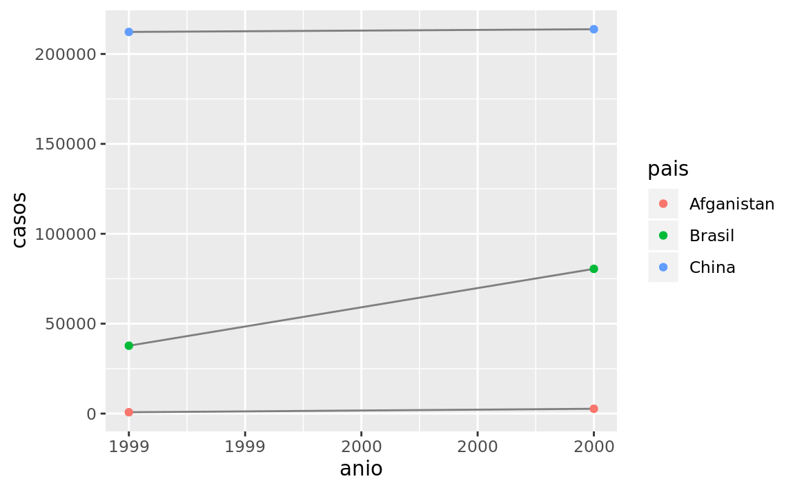

12 Datos ordenados
12.1 Introducción
“Todas las familias felices se parecen unas a otras, pero cada familia infeliz lo es a su manera.” –– Leo Tolstoy
“Todos los datos ordenados se parecen unos a otros, pero cada dato desordenado lo es a su manera” — Hadley Wickham
En este capítulo aprenderás una metodología consistente para organizar datos en R, a esta metodología le llamaremos tidy data (datos ordenados). Llevar tus datos a este formato requiere algo de trabajo previo, sin embargo dicho trabajo tiene retorno positivo en el largo plazo. Una vez que tengas tus datos ordenados y las herramientas para ordenar datos que provee el tidyverse, vas a gastar mucho menos tiempo pasando de una forma de representar datos a otra, permietiéndote destinar más tiempo a las preguntas analíticas.
Este capítulo te dará una introducción práctica a tidy data y las herramientas que provee el paquete tidyr. Si desear saber más acerca de la teoría subyacente, puede que te guste el artículo Tidy Data publicado en la revista Journal of Statistical Software, http://www.jstatsoft.org/v59/i10/paper.
12.1.1 Prerequisitos
En este capítulo nos enfocaremos en tidyr, un paquete que provee un conjunto de herramientas que te ayudarán a ordenar datos desordenados. tidyr es parte del núcleo del tidyverse.
library(tidyverse)
library(datos)12.2 Datos ordenados
Puedes representar la misma información de múltiples formas. El ejemplo a continuación muestra los mismos datos ordenados de cuatro manera distintas. Cada dataset muestra los mismos valores de cuatro variables pais, anio, poblacion y casos, pero cada dataset organiza los valores de forma distinta.
tabla1
#> # A tibble: 6 x 4
#> pais anio casos poblacion
#> <fct> <int> <int> <int>
#> 1 Afganistan 1999 745 19987071
#> 2 Afganistan 2000 2666 20595360
#> 3 Brasil 1999 37737 172006362
#> 4 Brasil 2000 80488 174504898
#> 5 China 1999 212258 1272915272
#> 6 China 2000 213766 1280428583
tabla2
#> # A tibble: 12 x 4
#> pais anio tipo cuenta
#> <fct> <int> <fct> <int>
#> 1 Afganistan 1999 casos 745
#> 2 Afganistan 1999 poblacion 19987071
#> 3 Afganistan 2000 casos 2666
#> 4 Afganistan 2000 poblacion 20595360
#> 5 Brasil 1999 casos 37737
#> 6 Brasil 1999 poblacion 172006362
#> # … with 6 more rows
tabla3
#> # A tibble: 6 x 3
#> pais anio tasa
#> <fct> <int> <fct>
#> 1 Afganistan 1999 745/19987071
#> 2 Afganistan 2000 2666/20595360
#> 3 Brasil 1999 37737/172006362
#> 4 Brasil 2000 80488/174504898
#> 5 China 1999 212258/1272915272
#> 6 China 2000 213766/1280428583
# Spread across two tibbles
tabla4a # casos
#> # A tibble: 3 x 3
#> pais `1999` `2000`
#> <fct> <int> <int>
#> 1 Afganistan 745 2666
#> 2 Brasil 37737 80488
#> 3 China 212258 213766
tabla4b # poblacion
#> # A tibble: 3 x 3
#> pais `1999` `2000`
#> <fct> <int> <int>
#> 1 Afganistan 19987071 20595360
#> 2 Brasil 172006362 174504898
#> 3 China 1272915272 1280428583Todo lo anterior representa los mismos datos subyacentes, pero no es igualmente fácil de usar. Un dataset, el dataset ordenado, es mucho más fácil de trabajar en el tidyverse.
Existen tres reglas interrelacionadas que hacen que un dataset sea ordenado:
- Cada variable tiene su propia columna.
- Cada observación tiene su propia fila.
- Cada valor tiene su propia celda.
La figura 12.1 muestra estas reglas visualmente.
Figure 12.1: Following three rules makes a dataset tidy: variables are in columns, observations are in rows, and values are in cells.
Estas reglas están interrelacionadas ya que es imposible cumplir dos de las tres. Esta interrelación lleva a un conjunto práctico de instrucciones mucho más simple:
- Coloca cada dataset en un tibble.
- Coloca cada variable en una columna.
En este ejemplo, solo tabla1 está ordenado. Es la única representación en que cada columna es una variable.
¿Por qué asegurarse de que los datos están ordenados? Existen dos principales ventajas:
- Existe una ventaja general de elegir una forma consistente de almacenar datos. Si tienes una estructura de datos consistente, es más fácil aprender las herramientas que sirven con aquello ya que presenta una uniformidad subyacente.
- Existe una ventaja específica al situar las variables en las columnas ya que permite que la naturaleza vectorizada de R brille. Como habrás aprendido en mutate y summary functions, muchas de las funciones que vienen con R trabajan con vectores de valores. Esto hace que transformar datos ordenados sea casi natural.
dplyr, ggplot2 y el resto de los paquetes del tidyverse están diseñados para trabajar con datos ordenados. Aquí hay algunos ejemplos de cómo se podría trabajar con tabla1.
# Calcular tasa por cada 10,000 habitantes
tabla1 %>%
mutate(tasa = casos / poblacion * 10000)
#> # A tibble: 6 x 5
#> pais anio casos poblacion tasa
#> <fct> <int> <int> <int> <dbl>
#> 1 Afganistan 1999 745 19987071 0.373
#> 2 Afganistan 2000 2666 20595360 1.29
#> 3 Brasil 1999 37737 172006362 2.19
#> 4 Brasil 2000 80488 174504898 4.61
#> 5 China 1999 212258 1272915272 1.67
#> 6 China 2000 213766 1280428583 1.67
# Compute casos per anio
tabla1 %>%
count(anio, wt = casos)
#> # A tibble: 2 x 2
#> anio n
#> <int> <int>
#> 1 1999 250740
#> 2 2000 296920
# Visualizar cambios en el tiempo
library(ggplot2)
ggplot(tabla1, aes(anio, casos)) +
geom_line(aes(group = pais), colour = "grey50") +
geom_point(aes(colour = pais))
12.2.1 Ejercicios
Usando prosa, describe como las variables y observaciones se organizan en las tablas de ejemplo.
Calcula la
tasaen las tablastabla2ytabla4a+tabla4b. Necesitarás las siguientes operaciones:- Extrae el número de casos de tuberculosis por país y año.
- Extrae la población por país y año.
- Divide los casos por la población y multiplica por 10000.
- Inserta los datos en el lugar adecuado.
¿Cuál representación es más fácil de trabajar? ¿Cuál es la más difícil? ¿Por qué?
Recrea el gráfico que muestra el cambio en el número de casos usando la
tabla2en lugar de latabla1. ¿Qué debes hacer en primera lugar?
12.3 Gather y Spread
Los principios de tidy data parecen tan obvios que te preguntarás si acaso vas a encontrar un dataset que no está ordenado. Desafortunadamente, sin embargo, gran parte de los datos que vas a encontrar están desordenados. Existen dos principales razones para esto:
La mayoría de las personas no están familirizadas con los principios de datos ordenados y es difícil derivarlos por cuenta propia a menos que pases mucho tiempo trabajando con datos.
Los datos a menudo están organizados para facilitar tareas distintas del análisis. Por ejemplo, los datos se organizan para que su registro sea lo más sencillo posible.
Esto significa que para la mayoría de los análisis, necesitarás ordenar los datos. El primer paso siempre es entender el significado de las variables y observaciones. Esto a veces es fácil, otras veces deberás consultar con quienes crearon el dataset. El segundo paso es resolver uno de los siguientes problemas frecuentes:
Una variable se esparce entre varias columnas
Una observación se esparce entre múltiples filas.
Típicamente un dataset tiene uno de los problemas, ¡si contiene ambos significa que tienes muy mala suerte! Para solucionar estos problemas necesitarás las dos funciones más importantes de tidyr: gather() (reunir) y spread() (esparcir).
12.3.1 Gather
Un problema común se tiene cuando en un dataset los nombres de las columnas no representan nombres de variables, sino que representan los valores de una variable. Tomando el caso de la tabla4a: los nombres de las columnas 1999 y 2000 representan los valores de la variable anio y cada fila representa dos observaciones en lugar de una.
tabla4a
#> # A tibble: 3 x 3
#> pais `1999` `2000`
#> <fct> <int> <int>
#> 1 Afganistan 745 2666
#> 2 Brasil 37737 80488
#> 3 China 212258 213766Para ordenar un dataset como este necesitamos contraer (gather) tales columnas en un nuevo par de variables. Para describir dicha operación necesitamos tres parámetros:
El conjunto de columnas que representan valores y no variables. En este ejemplo son las columnas
1999y2000.El nombre de la variable cuyos valores forman los nombres de las columnas. Llamaremos a esto
key(llave) y en este caso corresponde aanio.El nombre de la variable cuyos valores se esparcen por las celdas. Llamaremos a esto
value(valor) y en este caso corresponde al número decasos.
Juntando estos parámetros se puede realizar una llamada a gather():
tabla4a %>%
gather(`1999`, `2000`, key = "anio", value = "casos")
#> # A tibble: 6 x 3
#> pais anio casos
#> <fct> <chr> <int>
#> 1 Afganistan 1999 745
#> 2 Brasil 1999 37737
#> 3 China 1999 212258
#> 4 Afganistan 2000 2666
#> 5 Brasil 2000 80488
#> 6 China 2000 213766Las columnas a contraer quedan seleccionadas siguiendo el estilo de notación de dplyr::select(). En este caso hay dos columnas, por lo que las listamos individualmente. Nota que “1999” y “2000” son nombres no-sintáxicos (debido a que no comienzan con una letra) por lo que los escribimos con backtick. Para refrescar tu memoria respecto de la selección de columnas, consulta select.

Figure 12.2: Gathering tabla4 into a tidy form.
En el resultado final, las columnas reunidas se eliminan y obtenemos la nuevas variables key y value. De otro modo, la relacién entre las variables originales se mantiene. Visualmente, esto se observa en la Figura 12.2. Podemos usar gather() para ordenar tabla4b de modo similar. La única diferencia es la variable almacenada en los valores de las celdas:
tabla4b %>%
gather(`1999`, `2000`, key = "anio", value = "poblacion")
#> # A tibble: 6 x 3
#> pais anio poblacion
#> <fct> <chr> <int>
#> 1 Afganistan 1999 19987071
#> 2 Brasil 1999 172006362
#> 3 China 1999 1272915272
#> 4 Afganistan 2000 20595360
#> 5 Brasil 2000 174504898
#> 6 China 2000 1280428583Para combinar las versiones ordenadas de tabla4a y tabla4b en un único tibble, necesitamos usar dplyr::left_join(), función que aprenderás en [datos relacionales].
tidy4a <- tabla4a %>%
gather(`1999`, `2000`, key = "anio", value = "casos")
tidy4b <- tabla4b %>%
gather(`1999`, `2000`, key = "anio", value = "poblacion")
left_join(tidy4a, tidy4b)
#> Joining, by = c("pais", "anio")
#> # A tibble: 6 x 4
#> pais anio casos poblacion
#> <fct> <chr> <int> <int>
#> 1 Afganistan 1999 745 19987071
#> 2 Brasil 1999 37737 172006362
#> 3 China 1999 212258 1272915272
#> 4 Afganistan 2000 2666 20595360
#> 5 Brasil 2000 80488 174504898
#> 6 China 2000 213766 128042858312.3.2 Spread
Extender (spread) es lo opuesto de gather. Lo usas cuando una observación aparece en múltiples filas. Por ejemplo, toma la tabla tabla2: una observación
You use it when an observation is scattered across multiple rows. For example, take tabla2: una observación es un país en un año, pero cada observación se reparte entre dos filas.
tabla2
#> # A tibble: 12 x 4
#> pais anio tipo cuenta
#> <fct> <int> <fct> <int>
#> 1 Afganistan 1999 casos 745
#> 2 Afganistan 1999 poblacion 19987071
#> 3 Afganistan 2000 casos 2666
#> 4 Afganistan 2000 poblacion 20595360
#> 5 Brasil 1999 casos 37737
#> 6 Brasil 1999 poblacion 172006362
#> # … with 6 more rowsPara ordenar esto, primero analiza la representación de un modo similar a cómo se haría con gather(). Esta vez, sin embargo, necesitamos únicamente dos parámetros:
La columna que contiene los nombres de las variables, la columna
key. En este caso corresponde atipo.La columna que contiene valores de múltiples variables, la columna
value. En este caso corresponde acuenta.
Una vez resuelto esto, podemos usar spread(), como se muestra programáticamente abajo y visualmente en la Figura 12.3.
tabla2 %>%
spread(key = tipo, value = cuenta)
#> # A tibble: 6 x 4
#> pais anio casos poblacion
#> <fct> <int> <int> <int>
#> 1 Afganistan 1999 745 19987071
#> 2 Afganistan 2000 2666 20595360
#> 3 Brasil 1999 37737 172006362
#> 4 Brasil 2000 80488 174504898
#> 5 China 1999 212258 1272915272
#> 6 China 2000 213766 1280428583
Figure 12.3: Spreading tabla2 makes it tidy
Como te habrás dado cuenta a partir de los argumentos comunes key y value, gather() y spread() son complementarios. gather() genera tablas estrechas y largas, spread() genera tablas anchas y cortas.
12.3.3 Ejercicios
- ¿Por qué
gather()yspread()no son perfectamente simétricas? Observa cuidadosamente el siguiente ejemplo:
stocks <- tibble(
anio = c(2015, 2015, 2016, 2016),
semestre = c(1, 2, 1, 2),
retorno = c(1.88, 0.59, 0.92, 0.17)
)
stocks %>%
spread(anio, retorno) %>%
gather("anio", "retorno", `2015`:`2016`)(Hint: observa los tipos de variables y piensa en los nombres de las columnas)
Tanto `spread()` como `gather()` tienen el argumento `convert` (convertir). ¿Qué hace dich argumento?- ¿Por qué falla el siguiente código?
tabla4a %>%
gather(`1999`, `2000`, key = "anio", value = "casos")
#> # A tibble: 6 x 3
#> pais anio casos
#> <fct> <chr> <int>
#> 1 Afganistan 1999 745
#> 2 Brasil 1999 37737
#> 3 China 1999 212258
#> 4 Afganistan 2000 2666
#> 5 Brasil 2000 80488
#> 6 China 2000 213766- ¿Por qué no se puede extender la siguiente tabla? ¿Cómo agregarias una nueva columna para resolver el problema?
personas <- tribble(
~ nombre, ~ llave, ~ valor,
#-----------------|--------|------
"Phillip Woods", "age", 45,
"Phillip Woods", "height", 186,
"Phillip Woods", "age", 50,
"Jessica Cordero", "age", 37,
"Jessica Cordero", "height", 156
)- Ordena la siguiente tabla. ¿Necesitas extenderla o contraerla? ¿Cuáles son las variables?
embarazo <- tribble(
~ embarazo, ~ hombre, ~ mujer,
"yes", NA, 10,
"no", 20, 12
)12.4 Separar y unir
Hasta ahora has aprendido a ordenar las tablas tabla2 y tabla4, pero no la tabla3 que tiene un problema diferente: contiene una columna (tasa) la cual contiene dos variables (casos y poblacion). Para solucionar este problema, necesitamos la función separate() (separar), También aprenderás acerca del complemento de separate(): unite() (unir), la cual se usa en los casos en que una única variable se reparte en varias columnas.
12.4.1 Separar
separate()divide una columna en varias columnas, dividiendo de acuerdo a la posición de un caracter separador. Tomando la tabla3:
tabla3
#> # A tibble: 6 x 3
#> pais anio tasa
#> <fct> <int> <fct>
#> 1 Afganistan 1999 745/19987071
#> 2 Afganistan 2000 2666/20595360
#> 3 Brasil 1999 37737/172006362
#> 4 Brasil 2000 80488/174504898
#> 5 China 1999 212258/1272915272
#> 6 China 2000 213766/1280428583La columna tasa contiene las variables casos y poblacion,necesitamos dividir esto en dos variables. separate() toma el nombre de la columna a separar y el nombre de las columnas a donde irá el resultado, tal como se muestra en la Figura 12.4 y el código a continuación.
tabla3 %>%
separate(tasa, into = c("casos", "poblacion"))
#> # A tibble: 6 x 4
#> pais anio casos poblacion
#> <fct> <int> <chr> <chr>
#> 1 Afganistan 1999 745 19987071
#> 2 Afganistan 2000 2666 20595360
#> 3 Brasil 1999 37737 172006362
#> 4 Brasil 2000 80488 174504898
#> 5 China 1999 212258 1272915272
#> 6 China 2000 213766 1280428583
Figure 12.4: Separating tabla3 makes it tidy
Por defecto, separate() dividirá una columna donde aparezca un caracter no no alfanumérico (i.e. un caracter que no es un número o letra). Por ejemplo, en el siguiente código, separate() divide los valores de tasa donde aparece el caracter slash. Si deseas usar un caracter específico para separar una columna, puedes especificarlo en el argumento sep de separate(). Por ejemplo, lo anterior se puede re-escribir del siguiente modo:
tabla3 %>%
separate(tasa, into = c("casos", "poblacion"), sep = "/")(Formalmente, sep es una expresión regular y aprenderás más sobre esto en strings.)
Mira atentamente los tipos de columna: notarás que casos y poblacion son columnas de tipo caracter. Este es el comportamiento por defecto en separate(): preserva el tipo de columna. Aquí, sin embargo, no es muy útil ya que se trata de números. Podemos pedir separate() a separate que intente convertir a un tipo más adecuado usando convert = TRUE:
tabla3 %>%
separate(tasa, into = c("casos", "poblacion"), convert = TRUE)
#> # A tibble: 6 x 4
#> pais anio casos poblacion
#> <fct> <int> <int> <int>
#> 1 Afganistan 1999 745 19987071
#> 2 Afganistan 2000 2666 20595360
#> 3 Brasil 1999 37737 172006362
#> 4 Brasil 2000 80488 174504898
#> 5 China 1999 212258 1272915272
#> 6 China 2000 213766 1280428583También puedes pasar un vector de enteros a sep. separate() interpreta los enteros como las posiciones donde dividir. Los valores positivos comienzan en 1 al extremo izquierdo de las cadenas de texto; los valores negativos comienzan en -1 al extremo derecho de las cadena de texto. Cuando uses enteros para separar cadenas de textos, el largo de sep debe ser uno menos que el número de nombres en into.
Puedes usar este arreglo para separar los últimos dos dígitos de cada año. Esto deja los datos menos ordenados, pero es útil en otros casos, como se verá más adelante.
tabla3 %>%
separate(anio, into = c("siglo", "anio"), sep = 2)
#> # A tibble: 6 x 4
#> pais siglo anio tasa
#> <fct> <chr> <chr> <fct>
#> 1 Afganistan 19 99 745/19987071
#> 2 Afganistan 20 00 2666/20595360
#> 3 Brasil 19 99 37737/172006362
#> 4 Brasil 20 00 80488/174504898
#> 5 China 19 99 212258/1272915272
#> 6 China 20 00 213766/128042858312.4.2 Unir
unite() es el inverso de separate(): combina múltiples columnas en una única columna. Necesitarás esta función con mucha menos frecuencia que separate(), pero aún así es una buena herramienta a tener en el bolsillo trasero.

Figure 12.5: Uniting tabla5 makes it tidy
Podemos usar unite() para unir las columnas siglo y anio creadas en el ejemplo anterior. Los datos están guardados en tidyr::tabla5. unite() toma un data frame, el nombre de la nueva variable a crear, y un conjunto de columnas a combinar, las que se especifican siguiendo el estilo de la función dplyr::select():
tabla5 %>%
unite(new, siglo, anio)
#> # A tibble: 6 x 3
#> pais new tasa
#> <fct> <chr> <fct>
#> 1 Afganistan 19_99 745/19987071
#> 2 Afganistan 20_00 2666/20595360
#> 3 Brasil 19_99 37737/172006362
#> 4 Brasil 20_00 80488/174504898
#> 5 China 19_99 212258/1272915272
#> 6 China 20_00 213766/1280428583En este caso también necesitamos el arguento sep. El separador por defecto es el guión bajo (_) entre los valores de las distintas columnas. Si no queremos una separación usamos "":
tabla5 %>%
unite(new, siglo, anio, sep = "")
#> # A tibble: 6 x 3
#> pais new tasa
#> <fct> <chr> <fct>
#> 1 Afganistan 1999 745/19987071
#> 2 Afganistan 2000 2666/20595360
#> 3 Brasil 1999 37737/172006362
#> 4 Brasil 2000 80488/174504898
#> 5 China 1999 212258/1272915272
#> 6 China 2000 213766/128042858312.4.3 Exercises
¿Qué hacen los argumentos
extrayfillenseparate()? Experimenta con las diversas opciones a partir de los siguientes datasets de ejemplo.tibble(x = c("a,b,c", "d,e,f,g", "h,i,j")) %>% separate(x, c("one", "two", "three")) tibble(x = c("a,b,c", "d,e", "f,g,i")) %>% separate(x, c("one", "two", "three"))Tanto
unite()comoseparate()tienen un argumentoremove. ¿Qué es lo que hace? ¿Por qué lo dejarías enFALSE?Compara y contrasta
separate()yextract(). ¿Por qué existen tres variaciones de separación (por posición, separador y grupos), pero solo una forma de unir?
12.5 Valores perdidos
Cambiar la representación de un dataset conlleva el riesgo de generar valores perdidos. Sorprendentemente, un valor puede perderse de dos formas:
- Explícita, i.e. aparece como
NA. - Implícita, i.e. simplemente no aparece en los datos.
Ilustremos esta idea con un dataset muy sencillo:
stocks <- tibble(
anio = c(2015, 2015, 2015, 2015, 2016, 2016, 2016),
qtr = c(1, 2, 3, 4, 2, 3, 4),
return = c(1.88, 0.59, 0.35, NA, 0.92, 0.17, 2.66)
)Existen dos valores perdidos en este dataset:
El retorno del cuarto trimestre de 2015 que está explícitamente perdido, debido a que la celda donde el valor debiera estar contiene
NA.El retorno del primer semestre de 2016 está implícitamente perdido, debido a que simplemente no aparece en el dataset.
One way to think about the difference is with this Zen-like koan: An explicit missing value is the presence of an absence; an implicit missing value is the absence of a presence.
The way that a dataset is represented can make implicit values explicit. For example, we can make the implicit missing value explicit by putting anios in the columns:
stocks %>%
spread(anio, return)
#> # A tibble: 4 x 3
#> qtr `2015` `2016`
#> <dbl> <dbl> <dbl>
#> 1 1 1.88 NA
#> 2 2 0.59 0.92
#> 3 3 0.35 0.17
#> 4 4 NA 2.66Because these explicit missing values may not be important in other representations of the data, you can set na.rm = TRUE in gather() to turn explicit missing values implicit:
stocks %>%
spread(anio, return) %>%
gather(anio, return, `2015`:`2016`, na.rm = TRUE)
#> # A tibble: 6 x 3
#> qtr anio return
#> <dbl> <chr> <dbl>
#> 1 1 2015 1.88
#> 2 2 2015 0.59
#> 3 3 2015 0.35
#> 4 2 2016 0.92
#> 5 3 2016 0.17
#> 6 4 2016 2.66Another important tool for making missing values explicit in tidy data is complete():
stocks %>%
complete(anio, qtr)
#> # A tibble: 8 x 3
#> anio qtr return
#> <dbl> <dbl> <dbl>
#> 1 2015 1 1.88
#> 2 2015 2 0.59
#> 3 2015 3 0.35
#> 4 2015 4 NA
#> 5 2016 1 NA
#> 6 2016 2 0.92
#> # … with 2 more rowscomplete() takes a set of columns, and finds all unique combinations. It then ensures the original dataset contains all those values, filling in explicit NAs where necessary.
There’s one other important tool that you should know for working with missing values. Sometimes when a data source has primarily been used for data entry, missing values indicate that the previous value should be carried forward:
treatment <- tribble(
~ person, ~ treatment, ~ response,
"Derrick Whitmore", 1, 7,
NA, 2, 10,
NA, 3, 9,
"Katherine Burke", 1, 4
)You can fill in these missing values with fill(). It takes a set of columns where you want missing values to be replaced by the most recent non-missing value (sometimes called last observation carried forward).
treatment %>%
fill(person)
#> # A tibble: 4 x 3
#> person treatment response
#> <chr> <dbl> <dbl>
#> 1 Derrick Whitmore 1 7
#> 2 Derrick Whitmore 2 10
#> 3 Derrick Whitmore 3 9
#> 4 Katherine Burke 1 412.5.1 Exercises
Compare and contrast the
fillarguments tospread()andcomplete().What does the direction argument to
fill()do?
12.6 Case Study
To finish off the chapter, let’s pull together everything you’ve learned to tackle a realistic data tidying problem. The tidyr::who dataset contains tuberculosis (TB) casos broken down by anio, pais, age, gender, and diagnosis method. The data comes from the 2014 World Health Organization Global Tuberculosis Report, available at http://www.who.int/tb/pais/data/download/en/.
There’s a wealth of epidemiological information in this dataset, but it’s challenging to work with the data in the form that it’s provided:
who
#> # A tibble: 7,240 x 60
#> country iso2 iso3 year new_sp_m014 new_sp_m1524 new_sp_m2534
#> <chr> <chr> <chr> <int> <int> <int> <int>
#> 1 Afghan… AF AFG 1980 NA NA NA
#> 2 Afghan… AF AFG 1981 NA NA NA
#> 3 Afghan… AF AFG 1982 NA NA NA
#> 4 Afghan… AF AFG 1983 NA NA NA
#> 5 Afghan… AF AFG 1984 NA NA NA
#> 6 Afghan… AF AFG 1985 NA NA NA
#> # … with 7,234 more rows, and 53 more variables: new_sp_m3544 <int>,
#> # new_sp_m4554 <int>, new_sp_m5564 <int>, new_sp_m65 <int>,
#> # new_sp_f014 <int>, new_sp_f1524 <int>, new_sp_f2534 <int>,
#> # new_sp_f3544 <int>, new_sp_f4554 <int>, new_sp_f5564 <int>,
#> # new_sp_f65 <int>, new_sn_m014 <int>, new_sn_m1524 <int>,
#> # new_sn_m2534 <int>, new_sn_m3544 <int>, new_sn_m4554 <int>,
#> # new_sn_m5564 <int>, new_sn_m65 <int>, new_sn_f014 <int>,
#> # new_sn_f1524 <int>, new_sn_f2534 <int>, new_sn_f3544 <int>,
#> # new_sn_f4554 <int>, new_sn_f5564 <int>, new_sn_f65 <int>,
#> # new_ep_m014 <int>, new_ep_m1524 <int>, new_ep_m2534 <int>,
#> # new_ep_m3544 <int>, new_ep_m4554 <int>, new_ep_m5564 <int>,
#> # new_ep_m65 <int>, new_ep_f014 <int>, new_ep_f1524 <int>,
#> # new_ep_f2534 <int>, new_ep_f3544 <int>, new_ep_f4554 <int>,
#> # new_ep_f5564 <int>, new_ep_f65 <int>, newrel_m014 <int>,
#> # newrel_m1524 <int>, newrel_m2534 <int>, newrel_m3544 <int>,
#> # newrel_m4554 <int>, newrel_m5564 <int>, newrel_m65 <int>,
#> # newrel_f014 <int>, newrel_f1524 <int>, newrel_f2534 <int>,
#> # newrel_f3544 <int>, newrel_f4554 <int>, newrel_f5564 <int>,
#> # newrel_f65 <int>This is a very typical real-life example dataset. It contains redundant columns, odd variable codes, and many missing values. In short, who is messy, and we’ll need multiple steps to tidy it. Like dplyr, tidyr is designed so that each function does one thing well. That means in real-life situations you’ll usually need to string together multiple verbs into a pipeline.
The best place to start is almost always to gather together the columns that are not variables. Let’s have a look at what we’ve got:
It looks like
pais,iso2, andiso3are three variables that redundantly specify the pais.aniois clearly also a variable.We don’t know what all the other columns are yet, but given the structure in the variable names (e.g.
new_sp_m014,new_ep_m014,new_ep_f014) these are likely to be values, not variables.
So we need to gather together all the columns from new_sp_m014 to newrel_f65. We don’t know what those values represent yet, so we’ll give them the generic name "key". We know the cells represent the count of casos, so we’ll use the variable casos. There are a lot of missing values in the current representation, so for now we’ll use na.rm just so we can focus on the values that are present.
who1 <- who %>%
gather(new_sp_m014:newrel_f65, key = "key", value = "casos", na.rm = TRUE)
who1
#> # A tibble: 76,046 x 6
#> country iso2 iso3 year key casos
#> <chr> <chr> <chr> <int> <chr> <int>
#> 1 Afghanistan AF AFG 1997 new_sp_m014 0
#> 2 Afghanistan AF AFG 1998 new_sp_m014 30
#> 3 Afghanistan AF AFG 1999 new_sp_m014 8
#> 4 Afghanistan AF AFG 2000 new_sp_m014 52
#> 5 Afghanistan AF AFG 2001 new_sp_m014 129
#> 6 Afghanistan AF AFG 2002 new_sp_m014 90
#> # … with 7.604e+04 more rowsWe can get some hint of the structure of the values in the new key column by counting them:
who1 %>%
count(key)
#> # A tibble: 56 x 2
#> key n
#> <chr> <int>
#> 1 new_ep_f014 1032
#> 2 new_ep_f1524 1021
#> 3 new_ep_f2534 1021
#> 4 new_ep_f3544 1021
#> 5 new_ep_f4554 1017
#> 6 new_ep_f5564 1017
#> # … with 50 more rowsYou might be able to parse this out by yourself with a little thought and some experimentation, but luckily we have the data dictionary handy. It tells us:
The first three letters of each column denote whether the column contains new or old casos of TB. In this dataset, each column contains new casos.
The next two letters describe the tipo of TB:
relstands for casos of relapseepstands for casos of extrapulmonary TBsnstands for casos of pulmonary TB that could not be diagnosed by a pulmonary smear (smear negative)spstands for casos of pulmonary TB that could be diagnosed be a pulmonary smear (smear positive)
The sixth letter gives the sex of TB patients. The dataset groups casos by males (
m) and females (f).The remaining numbers gives the age group. The dataset groups casos into seven age groups:
014= 0 – 14 anios old1524= 15 – 24 anios old2534= 25 – 34 anios old3544= 35 – 44 anios old4554= 45 – 54 anios old5564= 55 – 64 anios old65= 65 or older
We need to make a minor fix to the format of the column names: unfortunately the names are slightly inconsistent because instead of new_rel we have newrel (it’s hard to spot this here but if you don’t fix it we’ll get errors in subsequent steps). You’ll learn about str_replace() in strings, but the basic idea is pretty simple: replace the characters “newrel” with “new_rel”. This makes all variable names consistent.
who2 <- who1 %>%
mutate(key = stringr::str_replace(key, "newrel", "new_rel"))
who2
#> # A tibble: 76,046 x 6
#> country iso2 iso3 year key casos
#> <chr> <chr> <chr> <int> <chr> <int>
#> 1 Afghanistan AF AFG 1997 new_sp_m014 0
#> 2 Afghanistan AF AFG 1998 new_sp_m014 30
#> 3 Afghanistan AF AFG 1999 new_sp_m014 8
#> 4 Afghanistan AF AFG 2000 new_sp_m014 52
#> 5 Afghanistan AF AFG 2001 new_sp_m014 129
#> 6 Afghanistan AF AFG 2002 new_sp_m014 90
#> # … with 7.604e+04 more rowsWe can separate the values in each code with two passes of separate(). The first pass will split the codes at each underscore.
who3 <- who2 %>%
separate(key, c("new", "tipo", "sexage"), sep = "_")
who3
#> # A tibble: 76,046 x 8
#> country iso2 iso3 year new tipo sexage casos
#> <chr> <chr> <chr> <int> <chr> <chr> <chr> <int>
#> 1 Afghanistan AF AFG 1997 new sp m014 0
#> 2 Afghanistan AF AFG 1998 new sp m014 30
#> 3 Afghanistan AF AFG 1999 new sp m014 8
#> 4 Afghanistan AF AFG 2000 new sp m014 52
#> 5 Afghanistan AF AFG 2001 new sp m014 129
#> 6 Afghanistan AF AFG 2002 new sp m014 90
#> # … with 7.604e+04 more rowsThen we might as well drop the new column because it’s constant in this dataset. While we’re dropping columns, let’s also drop iso2 and iso3 since they’re redundant.
who3 %>%
count(new)
#> # A tibble: 1 x 2
#> new n
#> <chr> <int>
#> 1 new 76046
who4 <- who3 %>%
select(-new, -iso2, -iso3)Next we’ll separate sexage into sex and age by splitting after the first character:
who5 <- who4 %>%
separate(sexage, c("sex", "age"), sep = 1)
who5
#> # A tibble: 76,046 x 6
#> country year tipo sex age casos
#> <chr> <int> <chr> <chr> <chr> <int>
#> 1 Afghanistan 1997 sp m 014 0
#> 2 Afghanistan 1998 sp m 014 30
#> 3 Afghanistan 1999 sp m 014 8
#> 4 Afghanistan 2000 sp m 014 52
#> 5 Afghanistan 2001 sp m 014 129
#> 6 Afghanistan 2002 sp m 014 90
#> # … with 7.604e+04 more rowsThe who dataset is now tidy!
I’ve shown you the code a piece at a time, assigning each interim result to a new variable. This typically isn’t how you’d work interactively. Instead, you’d gradually build up a complex pipe:
who %>%
gather(key, value, new_sp_m014:newrel_f65, na.rm = TRUE) %>%
mutate(key = stringr::str_replace(key, "newrel", "new_rel")) %>%
separate(key, c("new", "var", "sexage")) %>%
select(-new, -iso2, -iso3) %>%
separate(sexage, c("sex", "age"), sep = 1)12.6.1 Exercises
In this case study I set
na.rm = TRUEjust to make it easier to check that we had the correct values. Is this reasonable? Think about how missing values are represented in this dataset. Are there implicit missing values? What’s the difference between anNAand zero?What happens if you neglect the
mutate()step? (mutate(key = stringr::str_replace(key, "newrel", "new_rel")))I claimed that
iso2andiso3were redundant withpais. Confirm this claim.For each pais, anio, and sex compute the total number of casos of TB. Make an informative visualisation of the data.
12.7 Non-tidy data
Before we continue on to other topics, it’s worth talking briefly about non-tidy data. Earlier in the chapter, I used the pejorative term “messy” to refer to non-tidy data. That’s an oversimplification: there are lots of useful and well-founded data structures that are not tidy data. There are two main reasons to use other data structures:
Alternative representations may have substantial performance or space advantages.
Specialised fields have evolved their own conventions for storing data that may be quite different to the conventions of tidy data.
Either of these reasons means you’ll need something other than a tibble (or data frame). If your data does fit naturally into a rectangular structure composed of observations and variables, I think tidy data should be your default choice. But there are good reasons to use other structures; tidy data is not the only way.
If you’d like to learn more about non-tidy data, I’d highly recommend this thoughtful blog post by Jeff Leek: http://simplystatistics.org/2016/02/17/non-tidy-data/